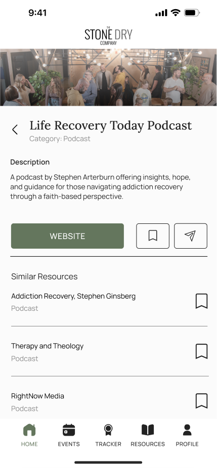

The Stone Dry Company App
Role
Time
Team
UNDERSTANDING THE PROBLEM
Individuals seeking community support in their sobriety journey often face friction when engaging with Stone Dry due to fragmented communication across multiple third-party platforms. This disjointed system makes it difficult for both members and organizers to stay connected, track participation, and effectively plan events.
The Stone Dry Company is a non-profit dedicated to supporting individuals on their sobriety journey through community. It aims to spread the idea that sobriety is fulfilling and empowering, offering connection and encouragement to those that are just starting their recovery journey.
Currently, it relies on multiple third-party apps for communication and events, complicating attendance tracking, budgeting, and outreach.
As part of the Develop for Good Winter 2025 cohort, I collaborated with a team to design a comprehensive solution tailored to Stone Dry's needs.
PROJECT CONSTRAINTS AND CLIENT REQUIREMENTS
Before beginning the design process, it was important to acknowledge several key constraints set by the client and the nature of the project. These factors directly shaped the direction of the final solution.
Platform Constraint
Brand Consistency
User Demographics
The client specifically requested the development of a mobile app to reduce reliance on third-party platforms.
While the client had an existing website and brand assets, there was no app-specific style guide. Our designs needed to extend the organization's visual identity across a new platform, ensuring both brand recognition and usability.
The organization serves a wide age range (20-60+). This demanded accessibility-conscious design choices such as clear typography, intuitive iconography, and simple interaction flows to accommodate users of varying tech familiarity.
THE SOLUTION
The Stone Dry Company Mobile App
We designed a mobile app that allow users to easily find meetings, register for events, track milestones, access resources, and connect with support networks.
WHAT I DID:
KEY FEATURES

Seek sobriety support for yourself or a loved one by taking an onboarding quiz to tailor the app to your experience.
Easily register for events & meetings and view them by group & upcoming date


Access valuable resources for sobriety
Track your sobriety milestones
How did we arrive at this solution? Through research!
RESEARCH PART 1: UNDERSTANDING THE AUDIENCE
We first began our process by aiming to understand our audience. We asked ourselves, "who are we designing for?"
We researched our client's marketing documents and performed a deep dive into our non-profit client's website. This primary research was needed because Stone Dry's Community serves a number of people from diverse age ranges who participate in different support groups.
From there we could pinpoint that our audience was made up of:
Individuals seeking sobriety support for themselves
Individuals seeking support for someone else (friend or loved one)
Individuals seeking to maintain their sobriety
Individuals seeking community and faith-based support
With this preliminary research done, our team was ready to progress forward and dive into the personal experiences of users.
RESEARCH PART 2: UNDERSTANDING THE USER
To design an effective app for Stone Dry, we conducted user research through 31 surveys and 2 interviews and synthesized our findings into an Affinity Map to understand the needs and challenges of individuals in their sobriety journey.
Through these interviews, we got to understand the experiences and needs of Stone Dry members ranging from 23 to 62 years old.
"As a person seeking sobriety support for myself, I want to be able to easily find meetings, register for events, track my milestones, and access resources through Stone Dry."
"As a person seeking sobriety support for someone else, I want to be able to share relevant meetings and events with my friend/loved one and access valuable resources to help support them along their journey through Stone Dry."
Affinity Map
With these synthesized findings, we identified three key features to develop.
Finding and registering for events and meetings

Allowing users to track their recovery milestones
Accessing resources directly within the app

EVENTS
MILESTONE TRACKER
RESOURCES
A secondary feature that the client wanted to see and if we had time to implement was the faith based/motivational-based quotes section that rotates a collection of quotes for the user per day.
Since faith is a crucial part to the Stone Dry community and sobriety support, as reported by users during our user surveys and interviews, we felt that adding this into the mobile app was important.
IMPLEMENTATION
We developed a user flow chart and journey chart as we prepared for wireframing, branding, and prototyping.
User Flow

Journey Chart
Wireframes
DESIGN IMPROVEMENTS
First Iteration

Second Iteration

Resource with no external link
Resource with external link
First Iteration
Second Iteration
Third Iteration
FINAL PRODUCT
TESTIMONIES FROM TEAM & CLIENT
"Jersey spearheaded the research, design creation, and finalization of the Resource Hub feature of the app, which was one of the client's primary features as it housed additional sobriety resources for users to access such as articles, podcasts, support organizations, and crisis hotline numbers. Jersey's attention to detail, wire-framing skills, and organizational skills shone through this process as there was much information to sort through and many wireframe iterations with the client. Overall, Jersey has great ability to effectively translate complex information into intuitive human-centered designs and Jersey would be a great asset to any team!"
- Catherine Calangian (Product Manager)
"I had the opportunity to work with Jersey as a part of the app development team for Stone Dry through Develop for Good, and she was a key contributor to the project's success! She handled tight timelines with professionalism, consistently delivering high-quality work while maintaining a positive attitude—even when responses weren't always as quick as they could have been from me. Jersey communicated clearly and effectively, making sure expectations and needs were understood. She put in extra time to ensure her designs were thoughtful and well-executed, demonstrating a strong work ethic and attention to detail. Her ability to stay focused under pressure, adapt as needed, and produce excellent work makes her a great asset to any team. I highly recommend her!"
- Stephanie Nashert (Client)
REFLECTIONS
My time with DFG and The Stone Dry Team was truly a rewarding and invaluable experience crucial to my growth as a product designer. I learned so much from my talented team and gained the skills necessary towards working through design challenges and communicating effectively with clients. Working with the Stone Dry Company was also a pleasant experience as our client's attentiveness and flexibility in meeting our requests helped propel us into creating a successful product. I can't wait to see how this app supports Stone Dry's community once it launches!
WHAT I LEARNT
Seek Feedback Often
This was my first time designing a product that would be handed off to a development team, so I made it a priority to ensure my designs were consistent and production-ready. I iterated frequently and regularly checked in with my product manager to make sure my decisions aligned with the broader product vision. These check-ins helped me better understand how to structure information hierarchy and communicate design intent more clearly.
UI Consistency is a team responsibility
While designing the resources page, I noticed that a "Save" button was a necessary and intuitive feature. However, when reviewing the event creation interface being developed by another team member, I realized this functionality hadn’t been included. I brought up this concern with the team, and together we addressed the inconsistency before handoff. This experience reinforced the value of cross-team communication and attention to shared design patterns.
 | jvarga07@tufts.edu
| jvarga07@tufts.edu